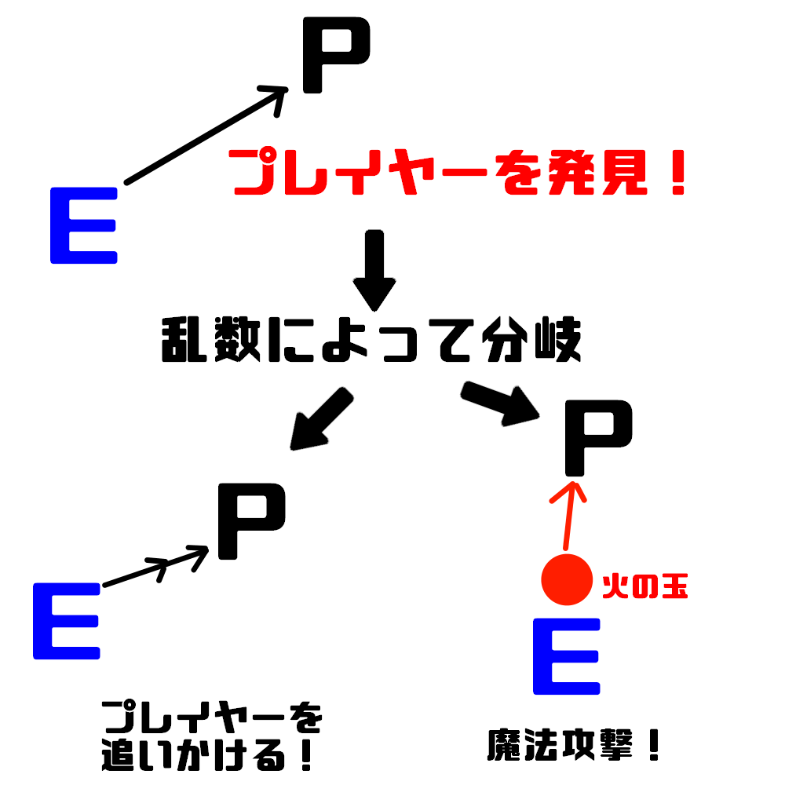
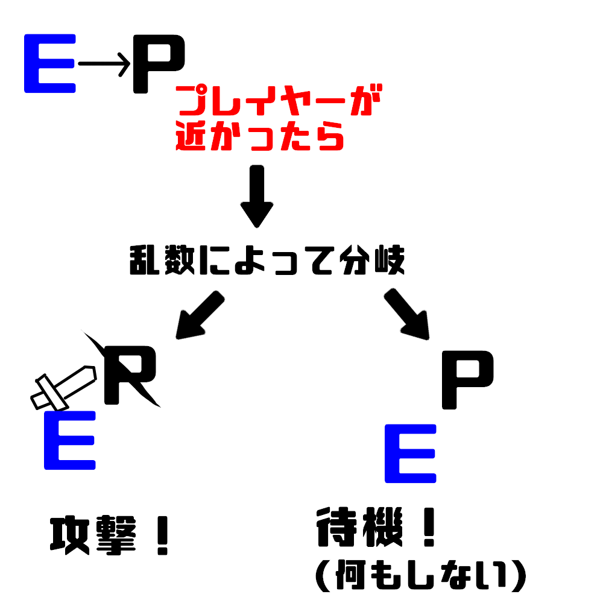
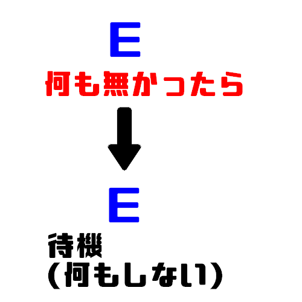
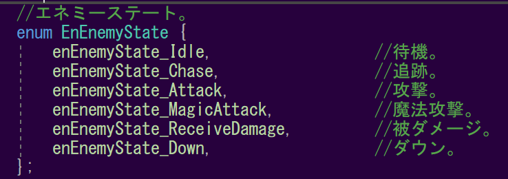
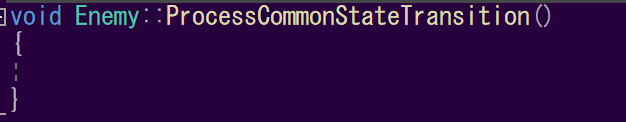

9.1 エネミーの行動
最後に、エネミーの実装をしていきましょう。
このゲームのエネミーの主な行動は以下の通りです。



このゲームのオブジェクトは「ステート」によって、処理を管理していると話しました。
エネミーにもステートがあり、このステートを遷移させることによって、エネミーの行動を制御していきたいと思います。

ステートを遷移させる処理については、Enemyの「ProcessCommonStateTransition関数」に記述していきます。今はまだ、この通り何も記述されていません。

また、「通常攻撃」、「魔法攻撃」、「追跡」、「プレイヤーの発見」などの処理も実装されていないので、追加していきましょう。
9.2 ステート遷移
ではまず、ステートを遷移する処理から実装していきましょう。 まず、エネミーがプレイヤーを発見したら、追跡or魔法攻撃をするようにしてみましょう。 では、Enemy.cppのProcessCommonStateTransition関数に下記のコードを追加してください。
Enemy.cpp
void Enemy::ProcessCommonStateTransition()
{
//各タイマーを初期化。
//待機時間と追跡時間を制限するため。
m_idleTimer = 0.0f;
m_chaseTimer = 0.0f;
//プレイヤーを見つけたら。
if (SearchPlayer() == true)
{
//乱数によって、追跡させるか魔法攻撃をするか決定する。
int ram = rand() % 100;
//乱数が40以上なら。
if (ram > 40)
{
//追跡ステートに遷移する。
m_enemyState = enEnemyState_Chase;
return;
}
//乱数が40未満なら。
else {
//魔法攻撃ステートに遷移する。
m_enemyState = enEnemyState_MagicAttack;
return;
}
}
}